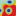
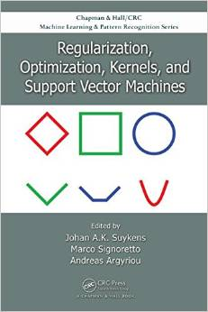

Willkommen!
Ryota Tomioka, PhD
- I was a member of
Intelligent Data Analysis Group at Fraunhofer FIRST and TU Berlin (Berlin, Germany) from Nov 2005 to Oct 2007 ... to get this incredible poster!
- I took part in Machine Learning Summer School 2007 in Tübingen, Germany.
- 2008/03/24 I got my PhD (Thesis advisor: Prof. Kazuyuki Aihara) with "Univ. of Tokyo, School of Information Science and Technology President's Award".
- 2008/04/01 I moved to Masashi Sugiyama's group at
 Tokyo Tech.
Tokyo Tech.
- 2009/04/01 I moved back to Department of Mathematical Informatics, University of Tokyo to join Kenji Yamanishi's group.
- 2009/12/12 Check out my talk at the Optimization workshop at NIPS.
- 2010/6/22: Slides and code for my talk at ICML 2010.
- 2011/8/26: Slides and exercises for my lecture at DTU Ph.D. Summer Course on Machine Learning.
- 2012/1/26: Slides for my talk in informatics seminar at Kyoto University.
- 2012/8/15: Slides and exercises for my lecture at DTU Ph.D. Summer Course on Advanced Machine Learning. This year, I have included an interactive demo to play with convex conjugate function pairs in MATLAB.
- 2012/9 and 2013/3: I had a great time at Mathematisches Forschungsinstitut Oberwolfach with Leibnitz fellow Franz Király. [Pic]
- 2013/8/14: Slides and other materials for my lecture at DTU Machine Learning Summer School.
- 2013/10: I joined TTI-C as a Research Assistant Professor.
- 2014/3: I gave intived talks at ISM and Kyoto University.
- 2014/8: Slides and other materials for my lecture at DTU Machine Learning Summer School.
- 2015/9: I will be teaching at MLSS 2015 Kyoto on tensor decompositions. Apply now!
Research Interests
- Learning Algorithms
- Biological Systems
-
Machine Learning for Brain Computer Interface [Paper] [Software]
-
Stoichiometric Analysis of Genetic Regulatory Networks [Paper]
- Information Processing in the Brain
- Theories on Information and Probability
- Statistics
- Information Theory
Publications
Latest
Book chapters
-
Augmented Lagrangian Methods for Learning, Selecting, and Combining Features. R. Tomioka and T. Suzuki and M. Sugiyama. In Suvrit Sra, Sebastian Nowozin, and Stephen J. Wright Eds. Optimization for Machine Learning, MIT Press, 2011. [Amazon.com]
- 
Low-rank tensor denoising and recovery via convex optimization. R. Tomioka, T. Suzuki, K. Hayashi, and H. Kashima. In J. Suykens, M. Signoretto, & A. Argyriou (editors), Regularization, Optimization, Kernels, and Support Vector Machines, 2014. [Amazon.com]
Refereed conference papers
-
Norm-Based Capacity Control in Neural Networks. Behnam Neyshabur, Ryota Tomioka, and Nathan Srebro. COLT, 2015. Accepted.
-
In Search of the Real Inductive Bias: On the Role of Implicit Regularization in Deep Learning.
Behnam Neyshabur, Ryota Tomioka, and Nathan Srebro. Workshop track poster at ICLR, 2015.
-
Multitask learning meets tensor factorization: task imputation via convex optimization. K. Wimalawarne, M. Sugiyama, and R. Tomioka. In Advances in NIPS 27, pages 2825-2833, 2014.
-
Convex Tensor Decomposition via Structured Schatten Norm Regularization. Ryota Tomioka and Taiji Suzuki. In NIPS 2013. [Poster] [Preliminary version]
-
Non-negative Multiple Tensor Factorization. Koh Takeuchi, RyotaTomioka, Katsuhiko Ishiguro, Akisato Kimura, and Hiroshi Sawada. In Proc. ICDM 2013.
-
Quantitative Prediction of Glaucomatous Visual Field Loss from Few Measurements. Zeng-Han Liang, Ryota Tomioka, Hiroshi Murata, Ryo Asaoka, and Kenji Yamanishi. In Proc. ICDM 2013.
-
Infinite Positive Semidefinite Tensor Factorization with Application to Music Signal Analysis. Kazuyoshi Yoshii, Ryota Tomioka, Daichi Mochihashi, and Masataka Goto. In Proc. 30th International Conference on Machine Learning (ICML 2013). 2013, Atlanta, USA. [SI & Demo audio].
-
Perfect Dimensionality Recovery by Variational Bayesian PCA. Shinichi Nakajima, Ryota Tomioka, Masashi Sugiyama, S. Derin Babacan. In Advances in NIPS 25. 2012, Lake Tahoe, NV, USA.
-
A Combinatorial Algebraic Approach for the Identifiability of Low-Rank Matrix Completion. Franz Király and Ryota Tomioka. In Proc. of the 29th International Conference on Machine Learning (ICML 2012), Edinburgh, UK.
-
A Bayesian Analysis of the Radioactive Releases of Fukushima. Ryota Tomioka and Morten Mørup. AI & Statistics 2012, La Palma, Spain. (JMLR W&CP 22: 1243-1251) [Software]
-
Statistical Performance of Convex Tensor Decomposition. Ryota Tomioka, Taiji Suzuki, Kohei Hayashi, and Hisashi Kashima. Advances in NIPS 24. 2011, Granada, Spain. [Poster]
-
Discovering Emerging Topics in Social Streams via Link Anomaly Detection. Toshimitsu Takahashi, Ryota Tomioka, and Kenji Yamanishi. ICDM 2011 IEEE International Conference on Data Mining, 2011, Vancouver, Canada. [Longer version]
-
Tensor Factorization Using Auxiliary Information. Atsuhiro Narita, Kohei Hayashi, Ryota Tomioka and Hisashi Kashima. In Proc. European Conference on Machine Learning and Principles and Practice of Knowledge Discovery in Databases (ECML PKDD), pp. 501-516, Athens, Greece, 2011. Best Student Paper Award in Data Mining.
-
Global Analytic Solution for Variational Bayesian Matrix Factorization. S. Nakajima, M. Sugiyama, R. Tomioka, In Advances in NIPS 23, pp. 1768–1776. 2010, Vancouver, Canada.
-
A Fast Augmented Lagrangian Algorithm for Learning Low-Rank Matrices. Ryota Tomioka, Taiji Suzuki, Masashi Sugiyama, and Hisashi Kashima, Proc. of the 27 th Annual International Conference on Machine Learning (ICML 2010), Haifa, Israel, 2010. [Slides] [Software]
-
Invariant Common Spatial Patterns: Alleviating Nonstationarities in Brain-Computer Interfacing, B. Blankertz, M. Kawanabe, R. Tomioka, F. Hohlefeld, V. Nikulin, and K.-R. Müller, NIPS 2007, Vancouver, Canada, Dec. 2007. [Bibtex] [Spotlight]
-
Classifying Matrices with a Spectral Regularization, Ryota Tomioka and Kazuyuki Aihara, Proc. of the 24th Annual International Conference on Machine Learning (ICML2007), pp. 895-902, ACM Press. Oregon, USA, June, 2007. [BibTex][Slides][Software]
-
Logistic Regression for Single Trial EEG Classification, Ryota Tomioka, Kazuyuki Aihara, and Klaus-Robert Müller, Advances in Neural Information Processing Systems 19, pp. 1377-1384, MIT Press. NIPS 2006, Vancouver, Canada, Dec. 2006. [BibTex] [Poster] [Software]
-
Optimizing Spectral Filters for Single Trial EEG Classification, R. Tomioka, G. Dornhege, G. Nolte, K. Aihara and K.-R. Müller, LNCS 4174, pp. 414-423, Springer. DAGM2006, Berlin, Germany, Sep. 2006. [Springer]
Refereed journal papers
-
The Algebraic Combinatorial Approach for Low-Rank Matrix Completion. Franz J. Király, Louis Theran, and Ryota Tomioka. Journal of Machine Learning Research, 2014. Accepted.
-
Discovering Emerging Topics in Social Streams via Link Anomaly Detection. Toshimitsu Takahashi, Ryota Tomioka, Kenji Yamanishi, IEEE Transactions on Knowledge and Data Engineering, 26 (1), pp. 120-130, 2014.
-
Global Analytic Solution of Fully-observed Variational Bayesian Matrix Factorization. Shinichi Nakajima, Masashi Sugiyama, S. Derin Babacan, Ryota Tomioka, Journal of Machine Learning Research, 14:1-37, 2013.
-
Tensor factorization using auxiliary information. Atsuhiro Narita, Kohei Hayashi, Ryota Tomioka, Hisashi Kashima, Data Mining and Knowledge Discovery, 25(2), pp. 298-324, 2012.
-
SpicyMKL: A Fast Algorithm for Multiple Kernel Learning with Thousands of Kernels. Taiji Suzuki and Ryota Tomioka, Machine Learning, 2011. Accepted. [Preprint] [Software]
-
Super-Linear Convergence of Dual Augmented Lagrangian Algorithm for Sparse Learning. Ryota Tomioka, Taiji Suzuki, and Masashi Sugiyama. Journal of Machine Learning Research, 12(May):1537-1586, 2011. A preliminary version was presented at NIPS2009 Workshop: Optimization for Machine Learning [Slides] [Video] [Software]
-
Large-Scale EEG/MEG Source Localization with Spatial Flexibility. S. Haufe, R. Tomioka, T. Dickhaus, C. Sannelli, B. Blankertz, G. Nolte, K.-R. Müller, Neuroimage, 2010. Accepted.
-
Modeling sparse connectivity between underlying brain sources for EEG/MEG. Stefan Haufe, Ryota Tomioka, Guido Nolte, Klaus-Robert Müller, and Motoaki Kawanabe, IEEE Trans. Biomed. Eng. 57(8), pp. 1954-1963, 2010.
-
A regularized discriminative framework for EEG analysis with application to brain-computer interface. Ryota Tomioka and Klaus-Robert Müller, Neuroimage, 49 (1) pp. 415-432, 2010. [Software]
-
Dual Augmented Lagrangian Method for Efficient Sparse Reconstruction, Ryota Tomioka and Masashi Sugiyama, IEEE Signal Proccesing Letters, 16 (12) pp. 1067-1070, 2009. [Preprint] [Software]
-
Optimizing Spatial Filters for Robust EEG Single-Trial Analysis, Benjamin Blankertz, Ryota Tomioka, Steven Lemm, Motoaki Kawanabe, and Klaus-Robert Müller, IEEE Signal Proc. Magazine, 25 (1), pp. 41-56, 2008.
-
Multivariate Analysis of Noise in Genetic Regulatory Networks, Ryota TOMIOKA, Hidenori KIMURA, Tetsuya J. KOBAYASHI and Kazuyuki AIHARA, Journal of Theoretical Biology, 229 (4), 501-521, 21 August 2004. (preprint)
Other talks
-
On the extension of trace norm to tensors. Ryota Tomioka, Kohei Hayashi, and Hisashi Kashima, NIPS2010 Workshop: Tensors, kernels and machine learning, Whistler, Canada, 2010. [Slides] [Software]
-
Sparse learning with duality gap guarantee, Ryota Tomioka, Masashi Sugiyama. In NIPS workshop OPT 2008 Optimization for Machine Learning, 2008.
-
Combined classification and channel/basis selection with L1-L2 regularization with application to P300 speller system, Ryota Tomioka and Stefan Haufe, Proc. 4th International BCI Workshop and Training Course 2008, Graz, Austria, Sep. 2008. [Slides]
-
Adapting Spatial Filtering Methods for Nonstationary BCIs, Ryota Tomioka, Jeremy Hill, Benjamin Blankertz, and Kazuyuki Aihara, Proc. IBIS2006, pp.65-70. IBIS2006, Osaka, Japan, Nov. 2006.
-
An Iterative Algorithm for Spatio-Temporal Filter Optimization, R. Tomioka, G. Dornhege, K. Aihara and K.-R. Müller, Verlag der Technischen Universität Graz. Proc. 3rd International BCI Workshop and Training Course 2006, Graz, Austria, Sep. 2006.
Others
-
Spectrally Weighted Common Spatial Pattern Algorithm for Single Trial EEG Classification, Ryota Tomioka, Guido Dornhege, Guido Nolte, Benjamin Blankertz, Kazuyuki Aihara, and Klaus-Robert Müller, Mathematical Engineering Technical Reports (METR-2006-40), July 2006.
-
Modeling fluctuations in genetic regulatory networks : a structural approach, Ryota TOMIOKA, Hidenori KIMURA, Tetsuya J. KOBAYASHI, and Kazuyuki AIHARA, IEICE technical report. Neurocomputing, 104 (226) pp. 13-17.
-
A Graph-Based Analysis of Stochasticity in Intracellular Networks, Tetsuya J. KOBAYASHI, Ryota TOMIOKA and Kazuyuki AIHARA, Mathematical Engineering Technical Reports (METR) 2004-24, , May 2004.
Professional Activities
- Editor for Neural Networks
-
Reviewer for NIPS 2007, 2008, 2010, 2011, 2012, 2013, ICML 2009, 2013, 2014, AISTATS 2014, ACML 2009, 2010, 2011, 2012, 2013, 2014, ECML 2010 JMLR, Neural Networks, Neuroimage, Pattern Recognition, IEEE TNN, IEEE TSP, IEEE TBME, IEEE TNSRE, IEEE SPL, IEEE TPAMI
-
PC member of NIPS 2009 Workshop on Connectivity Inference in Neuroimaging (CINI 2009) and NIPS workshop Optimization for Machine Learning 2011, 2012.
Misc.

{kind=link}
![[Poster]](talks/nips06_poster.jpg){kind=link}